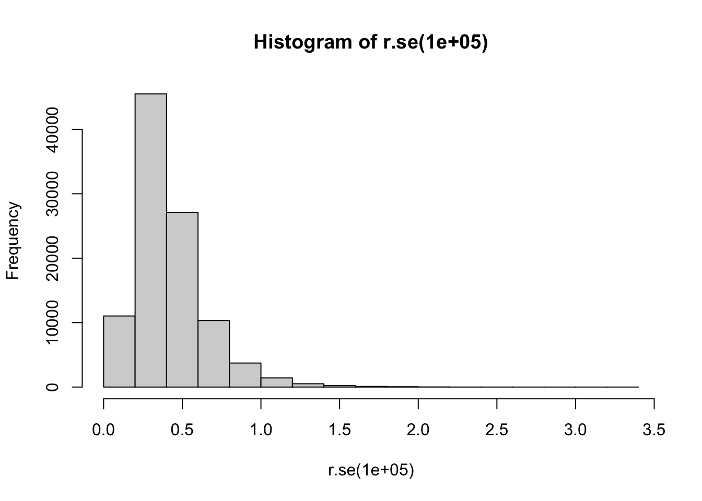
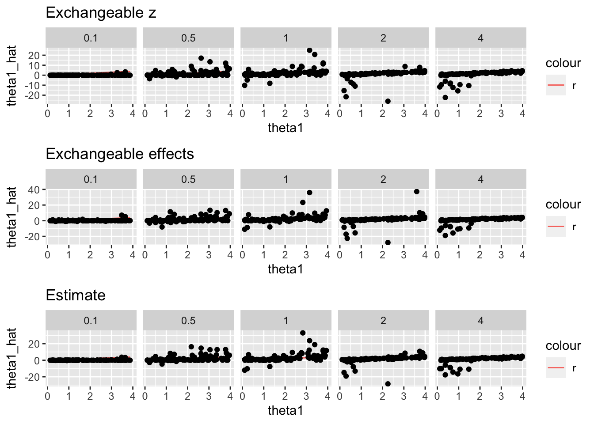
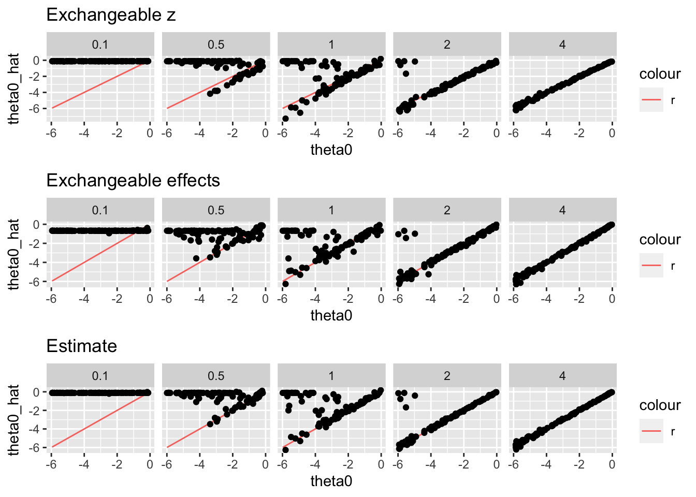
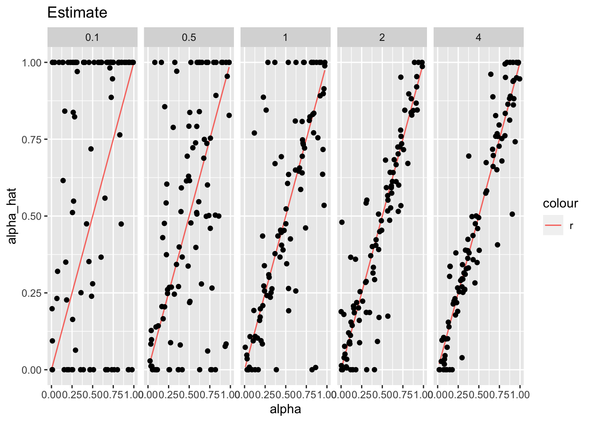
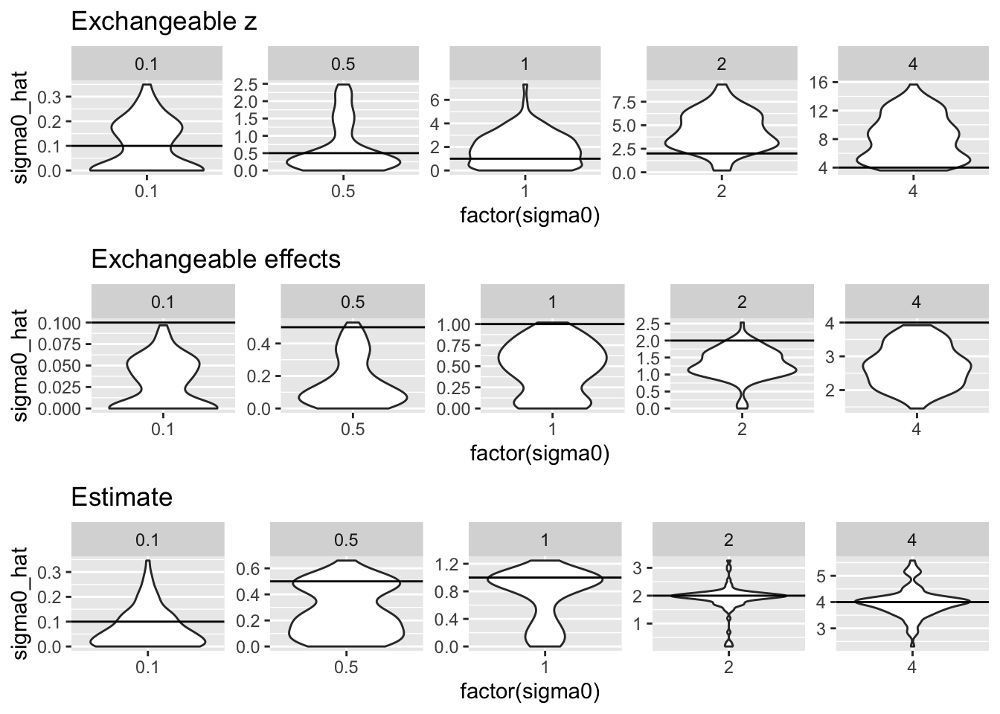
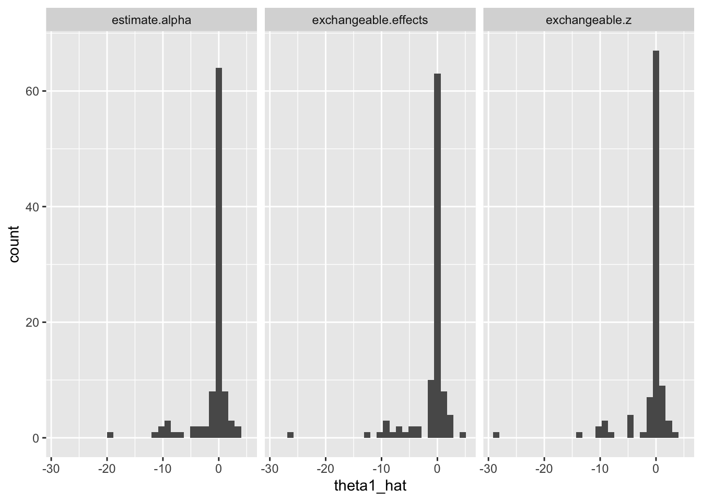
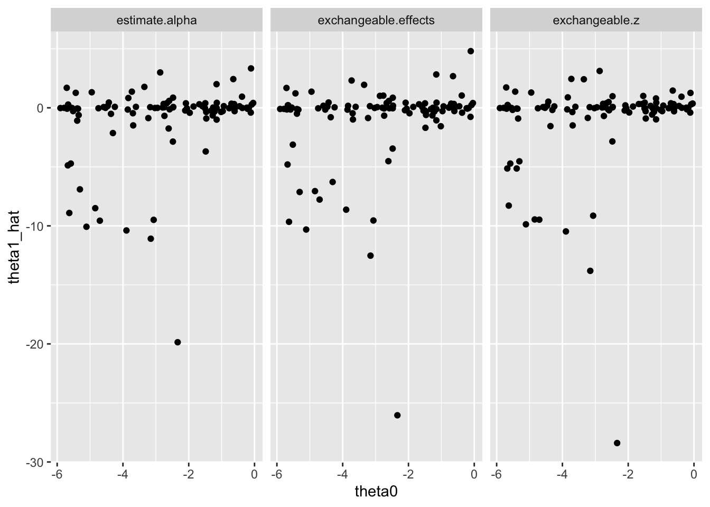

Last updated: 2022-04-06
Checks: 7 0
Knit directory: logistic-susie-gsea/
This reproducible R Markdown analysis was created with workflowr (version 1.7.0). The Checks tab describes the reproducibility checks that were applied when the results were created. The Past versions tab lists the development history.
Great! Since the R Markdown file has been committed to the Git repository, you know the exact version of the code that produced these results.
Great job! The global environment was empty. Objects defined in the global environment can affect the analysis in your R Markdown file in unknown ways. For reproduciblity it’s best to always run the code in an empty environment.
The command set.seed(20220105) was run prior to running the code in the R Markdown file. Setting a seed ensures that any results that rely on randomness, e.g. subsampling or permutations, are reproducible.
Great job! Recording the operating system, R version, and package versions is critical for reproducibility.
Nice! There were no cached chunks for this analysis, so you can be confident that you successfully produced the results during this run.
Great job! Using relative paths to the files within your workflowr project makes it easier to run your code on other machines.
Great! You are using Git for version control. Tracking code development and connecting the code version to the results is critical for reproducibility.
The results in this page were generated with repository version 8944883. See the Past versions tab to see a history of the changes made to the R Markdown and HTML files.
Note that you need to be careful to ensure that all relevant files for the analysis have been committed to Git prior to generating the results (you can use wflow_publish or wflow_git_commit). workflowr only checks the R Markdown file, but you know if there are other scripts or data files that it depends on. Below is the status of the Git repository when the results were generated:
Ignored files:
Ignored: .DS_Store
Ignored: .RData
Ignored: .Rhistory
Ignored: .Rproj.user/
Ignored: library/
Ignored: renv/library/
Ignored: renv/staging/
Ignored: staging/
Untracked files:
Untracked: _targets.R
Untracked: _targets.html
Untracked: _targets.md
Untracked: _targets/
Untracked: _targets_r/
Untracked: analysis/deng_example.Rmd
Untracked: analysis/fetal_reference_cellid_gsea.Rmd
Untracked: analysis/fixed_intercept.Rmd
Untracked: analysis/iDEA_examples.Rmd
Untracked: analysis/latent_gene_list.Rmd
Untracked: analysis/latent_logistic_susie.Rmd
Untracked: analysis/libra_setup.Rmd
Untracked: analysis/linear_method_failure_modes.Rmd
Untracked: analysis/linear_regression_failure_regime.Rmd
Untracked: analysis/logistic_susie_veb_boost_vs_vb.Rmd
Untracked: analysis/logistic_susie_vis.Rmd
Untracked: analysis/references.bib
Untracked: analysis/simulations.Rmd
Untracked: analysis/single_cell_pbmc_l1.Rmd
Untracked: analysis/test.Rmd
Untracked: analysis/wenhe_baboon_example.Rmd
Untracked: baboon_diet_cache/
Untracked: build_site.R
Untracked: cache/
Untracked: code/latent_logistic_susie.R
Untracked: code/logistic_susie_data_driver.R
Untracked: code/marginal_sumstat_gsea_collapsed.R
Untracked: data/adipose_2yr_topsnp.txt
Untracked: data/deng/
Untracked: data/fetal_reference_cellid_gene_sets.RData
Untracked: data/pbmc-purified/
Untracked: data/wenhe_baboon_diet/
Untracked: docs.zip
Untracked: index.md
Untracked: latent_logistic_susie_cache/
Untracked: simulation_targets/
Untracked: single_cell_pbmc_cache/
Untracked: single_cell_pbmc_l1_cache/
Untracked: summary_stat_gsea_exploration_cache/
Untracked: summary_stat_gsea_sim_cache/
Unstaged changes:
Modified: _simulation_targets.R
Modified: _targets.Rmd
Modified: analysis/baboon_diet.Rmd
Modified: analysis/gseabenchmark_tcga.Rmd
Deleted: analysis/summary_stat_gsea_univariate_simulations.Rmd
Modified: code/fit_baselines.R
Modified: code/fit_logistic_susie.R
Modified: code/fit_mr_ash.R
Modified: code/fit_susie.R
Modified: code/load_gene_sets.R
Modified: code/simulate_gene_lists.R
Modified: code/utils.R
Modified: target_components/factories.R
Modified: target_components/methods.R
Note that any generated files, e.g. HTML, png, CSS, etc., are not included in this status report because it is ok for generated content to have uncommitted changes.
These are the previous versions of the repository in which changes were made to the R Markdown (analysis/summary_stat_gsea_sim.Rmd) and HTML (docs/summary_stat_gsea_sim.html) files. If you’ve configured a remote Git repository (see ?wflow_git_remote), click on the hyperlinks in the table below to view the files as they were in that past version.
| File | Version | Author | Date | Message |
|---|---|---|---|---|
| Rmd | 8944883 | karltayeb | 2022-04-06 | wflow_publish(c(“analysis/index.Rmd”, “analysis/summary_stat_gsea_sim.Rmd”)) |
| html | 281c7d2 | karltayeb | 2022-04-06 | Build site. |
| Rmd | eb8b2ae | karltayeb | 2022-04-06 | wflow_publish(“analysis/summary_stat_gsea_sim.Rmd”) |
library(tidyverse)── Attaching packages ─────────────────────────────────────── tidyverse 1.3.1 ──✓ ggplot2 3.3.5 ✓ purrr 0.3.4
✓ tibble 3.1.6 ✓ dplyr 1.0.8
✓ tidyr 1.2.0 ✓ stringr 1.4.0
✓ readr 2.1.2 ✓ forcats 0.5.1── Conflicts ────────────────────────────────────────── tidyverse_conflicts() ──
x dplyr::filter() masks stats::filter()
x dplyr::lag() masks stats::lag()library(latex2exp)
source('code/marginal_sumstat_gsea.R')#' simulate summary statistics from two component enrichment model
#' params is a list with elements theta, sigma0, alpha
#' r.se is a function for sampling standard errors runif(1e-3, 5) by default
simulate.gene.summary.stats = function(params, x = NULL, gene.set.prop=0.01, n.genes=10000, r.se=NULL) {
theta0 = params$theta[1]
theta1 = params$theta[2]
sigma0 = params$sigma0
alpha = params$alpha
# simulate x if not provided
if(is.null(x)){
x <- rbinom(n.genes, 1, gene.set.prop) # gene set
} else{
n.genes <- length(x)
}
if(is.null(r.se)){
se <- runif(n.genes, 1e-3, 5) # simulate standard errors, reasonable?
} else {
se <- r.se(n.genes)
}
sigma <- se ^ alpha * sigma0
gamma <- rbinom(n.genes, 1, sigmoid(theta0 + theta1 * x)) # null/non-null
beta <- rnorm(n.genes, mean = 0, sd = se)
beta <- beta + (rnorm(n.genes, mean=0, sd=sigma) * gamma)
return(list(beta=beta, se=se, gamma=gamma))
}roll = function(v, n=1){
if(n==0){
return(v)
} else{
return(c(tail(v, n), head(v, -n)))
}
}
#' make sequence of simulated gene sets of fixed size
#' and decreasing overlap with first gene set
#' gene.set.size = size of gene set
#' by = how much to overlap incriment
sim.X.base = function(n.genes=1e4, gene.set.size=1e2, from=0, to=NULL, by=5){
to <- ifelse(is.null(to), gene.set.size, to)
x = c(rep(1, gene.set.size), rep(0, n.genes-gene.set.size))
u <- map(seq(from, to, by=by), ~roll(x, n=.x))
X <- matrix(unlist(u), nrow = n.genes)
return(X)
}
#' make sequence of gene sets overlapping base gene set
sim.X.other = function(gene.set.size, other.size, by=5){
sim.X.base(
gene.set.size=other.size,
from=max(0, gene.set.size - other.size), to=gene.set.size, by=by
)
}
#' put it all together
#' returns matrix X
#' first columns is the gene set of interest
#' other columns are gene sets of varying sizes that overlap the first
sim.X = function(gene.set.size=50, set.sizes = NULL, by=5){
X <- sim.X.base(gene.set.size = gene.set.size, by=by)
if(!is.null(set.sizes)){
Xs <- do.call('cbind', map(set.sizes, ~sim.X.other(gene.set.size, .x, by=by)))
X <- cbind(X, Xs)
}
return(X)
}
X.overlap <- sim.X(gene.set.size=100, by=20)
X.nest <- cbind(
sim.X.base(gene.set.size = 50, by=50),
sim.X.base(gene.set.size = 100, by=100),
sim.X.base(gene.set.size = 200, by=200),
sim.X.base(gene.set.size = 500, by=500),
sim.X.base(gene.set.size = 1000, by=1000),
sim.X.base(gene.set.size = 2000, by=2000),
sim.X.base(gene.set.size = 5000, by=5000)
)
X <- cbind(X.overlap, X.nest)
X <- sim.X(gene.set.size = 100, by=100)
X.true <- X.overlap[, 1]Here’s just a reminder of our optimization options. We can either optimize the marginal likelihood directly, or perform EM. For the scale of problems we’re working on, they run about the same speed. optim is maybe 20% faster. But, I’ve also seen that it’s harder to initialize right. And in general we need a good initialization strategy.
library(tictoc)
params = list(
theta = c(-2, 1),
alpha = 0.5,
sigma0 = 3.0
)
x = c(rep(1, 100), rep(0, 9900))
sim <- simulate.gene.summary.stats(params, x)
gsea <- summary.stat.gsea(x, sim$beta, sim$se)
params.init = list(
theta = c(0, 0),
alpha = 1.0,
sigma0 = 1.0
)
tic('optimizing marginal likelihood')
params.fit1 <- gsea$optimize.marginal.likelihood(
params.init, update.alpha = T, update.sigma0 = T)optimize all parameterstoc()optimizing marginal likelihood: 5.068 sec elapsedtic('optimize via EM')
params.fit2 <- gsea$expectation.maximiztion(
params.init, n.iter=1000, update.alpha = T, update.sigma0 = T)
toc()optimize via EM: 6.298 sec elapsed#' fit the model and return parameter list
#' ... arguments to pass to to EM
fit.sumstat.gsea = function(beta, se, x, params.init=NULL, theta=NULL, alpha=NULL, sigma0=NULL, ...){
gsea <- summary.stat.gsea(x, beta, se)
# TODO: figure out how to initialize parameters
if(is.null(params.init)){
params.init = list(
theta = c(-3, 0),
alpha = 1.0,
sigma0 = 1
)
}
if(!is.null(theta)){
params.init$theta = theta
}
if(!is.null(alpha)){
params.init$alpha = alpha
}
if(!is.null(sigma0)){
params.init$sigma0 = sigma0
}
params.fit = gsea$expectation.maximiztion(params.init, ...)
return(params.fit)
}
#' driver function for simulations
#' fit model for all gene sets
#' assume first column of X is the gene is sim$x
sim.driver = function(X, sim, params.init=NULL, update.alpha=T, update.sigma0=T){
# fit model for each gene set
res <- map(1:dim(X)[2], ~fit.sumstat.gsea(
sim$beta, sim$se, X[,.x],
params.init=params.init,
update.alpha=update.alpha, update.sigma0=update.sigma0
))
# clean up data
for (i in 1:length(res)){
res[[i]]$responsibilities <- NULL
names(res[[i]]$theta) <- paste0('theta', c(0, 1))
}
# dump into table with some useful stats
res_tbl <- tibble(
overlap=(X[,1] %*% X)[1,],
active = 1:dim(X)[2] == 1,
set.size=colSums(X),
p.overlap = overlap/set.size,
res=res
) %>%
unnest_wider(res) %>%
unnest_wider(theta) %>%
rename(
theta0_hat=theta0,
theta1_hat=theta1,
alpha_hat=alpha,
sigma0_hat=sigma0) %>%
mutate(likelihood = map_dbl(lik.history, ~tail(.x, 1)))
return(res_tbl)
}We have a null and non-null simulation. \(\theta_0 \sim \text{Unif}[-6, 0]\)
\(\theta_1 \sim \text{Unif}[0.1, 4]\) for the non-null, and \(\theta_1 = 0\) for the null simulation.
\(\alpha \sim \text{Unif}[0, 1]\)
\(s_i^2 \sim log \mathcal{N}(-1, 0.5^2)\) to approximate the histogram that peter showed me.
\(\sigma_0 \in \{0.1, 0.5, 1.0, 2.0, 4.0}\)
From these we sample the latent indicator of component membership
\(\gamma_i \sim \text{Bernoulli} (p_i)\) Where \(p_i = \sigma(\theta_0 + \theta_1 x_i)\))
And finally
\(\hat \beta_i \sim \mathcal{N}(0, s_i^2 + \gamma_i s_i^{2\alpha} \sigma_0^2)\)
It seems to me the relative values of \(s_i\) and \(\sigma_0\) are whats critical, so I picked a range of values for \(\sigma_0\) so we can study how easy it is for the model to estimate our enrichment parameters when effect sizes are strong or weak.
The “true” gene set is taken to be the first 100 genes. We simulate 10000 genes. For each non-null simulation, we also fit the model to a gene set of 100 genes with no overap with the true gene set (the second 100 genes…).
For the null simulations we just fit the one geneset consisting of the first hundred genes.
Of course, we would like to know how we estimate the parameters when the model is fit against sub-sets and super-sets of the gene set, and at various degrees of overlap. We’d also like to know how often we prioritize the true gene set over these other various sets (which are all enriched marginally). But we hdo not explore that here.
library(future)
plan(multisession)
r.se = function(n) exp(rnorm(n, mean=-1, sd=0.5))
hist(r.se(100000))
| Version | Author | Date |
|---|---|---|
| 281c7d2 | karltayeb | 2022-04-06 |
# make simulation
# sigma0=0 is the null simulation
sim <- xfun::cache_rds({
n <- 100
map_dfr(c(0.1, 0.5, 1.0, 2.0, 4.0),
~tibble( # sample parameters
theta0 = runif(n, -6, 0),
theta1 = runif(n, 0.1, 4),
alpha = runif(n, 0, 1),
sigma0 = rep(.x, n)
) %>%
rowwise() %>%
mutate( # simulate gene lists
params = list(list(
theta = c(theta0, theta1),
alpha = alpha,
sigma0 = sigma0
)),
sim = list(simulate.gene.summary.stats(params, X.true, r.se=r.se))
) %>% ungroup())}, dir='cache/summary_stat_gsea_sim/')
possibly.sim.driver = possibly(sim.driver, NA)# fix alpha = 0
exchangeable.effects.fit <- xfun::cache_rds({
params.init = list(
theta = c(0, 0),
alpha = 0.,
sigma0 = 1
)
sim %>%
mutate(
fit = furrr::future_map(sim, ~possibly.sim.driver(
X, .x, params.init, update.alpha=F, update.sigma0=T))
)
}, hash = list(sim), dir='cache/summary_stat_gsea_sim/')exchangeable.z.fit <- xfun::cache_rds({
params.init <- list(
theta = c(0, 0),
alpha = 1.,
sigma0 = 1
)
sim %>%
mutate(
fit = furrr::future_map(sim, ~possibly.sim.driver(
X, .x, params.init, update.alpha=F, update.sigma0=T))
)
}, hash = list(sim), dir='cache/summary_stat_gsea_sim/')estimate.alpha.fit <- xfun::cache_rds({
params.init <- list(
theta = c(0, 0),
alpha = 1.,
sigma0 = 1
)
sim %>%
mutate(
fit = furrr::future_map(sim, ~possibly.sim.driver(
X, .x, params.init, update.alpha=T, update.sigma0=T))
)
}, hash = list(sim), dir='cache/summary_stat_gsea_sim/')# simulate at various levels of sigma0
null.sim <- xfun::cache_rds({
n <- 20
map_dfr(c(0.1, 0.5, 1.0, 2.0, 4.0),
~tibble( # sample parameters
theta0 = runif(n, -6, 0),
theta1 = rep(0, n),
alpha = runif(n, 0, 1),
sigma0 = rep(.x, n)
) %>%
rowwise() %>%
mutate( # simulate gene lists
params = list(list(
theta = c(theta0, theta1),
alpha = alpha,
sigma0 = sigma0
)),
sim = list(simulate.gene.summary.stats(params, X[, 1], r.se=r.se))
) %>% ungroup())}, dir='cache/summary_stat_gsea_sim/')# fix alpha = 0
null.exchangeable.effects.fit <- xfun::cache_rds({
params.init = list(
theta = c(0, 0),
alpha = 0.,
sigma0 = 1
)
null.sim %>%
mutate(
fit = furrr::future_map(sim, ~possibly.sim.driver(
X[, 1, drop=FALSE], .x, params.init, update.alpha=F, update.sigma0=T))
)
}, hash = list(null.sim), dir='cache/summary_stat_gsea_sim/')null.exchangeable.z.fit <- xfun::cache_rds({
params.init <- list(
theta = c(0, 0),
alpha = 1.,
sigma0 = 1
)
null.sim %>%
mutate(
fit = furrr::future_map(sim, ~possibly.sim.driver(
X[, 1, drop=FALSE], .x, params.init, update.alpha=F, update.sigma0=T))
)
}, hash = list(null.sim), dir='cache/summary_stat_gsea_sim/')null.estimate.alpha.fit <- xfun::cache_rds({
params.init <- list(
theta = c(0, 0),
alpha = 1.,
sigma0 = 1
)
null.sim %>%
mutate(
fit = furrr::future_map(sim, ~possibly.sim.driver(
X[, 1, drop=FALSE], .x, params.init, update.alpha=T, update.sigma0=T))
)
}, hash = list(null.sim), dir='cache/summary_stat_gsea_sim/')#' file is the stem of the file name...
#' search for the file in the cache directory file_HASH.rds
read_cache = function(file, dir='cache/summary_stat_gsea_sim/'){
files <- list.files(path = "cache/summary_stat_gsea_sim/", pattern=paste0('^', file, '_'), full.names = TRUE)
if(length(files == 1)){
print(paste('loading from:', files[1]))
return(readRDS(files[1]))
}
}
sim <- read_cache('sim')
exchangeable.z.fit <- read_cache('sim.ex.z')
exchangeable.effects.fit <- read_cache('sim.ex.effects')
estimate.alpha.fit <- read_cache('sim.alpha.fit')
null.sim <- read_cache('null.sim')
null.exchangeable.z.fit <- read_cache('null.sim.ex.z')
null.exchangeable.effects.fit <- read_cache('null.sim.ex.effect')
null.estimate.alpha.fit <- read_cache('null.sim.alpha.fit')do.true.hat.scatter = function(tbl, par){
plot <- tbl %>%
unnest(fit) %>%
filter(active) %>%
ggplot(aes(x=!!sym(par), y=!!sym(paste0(par, '_hat')))) +
geom_line(aes(x=!!sym(par), y=!!sym(par), color='r')) +
geom_point() + facet_wrap(vars(sigma0), nrow=1)
return(plot)
}
do.true.hat.violin = function(tbl, par){
plot <- tbl %>%
unnest(fit) %>%
filter(active) %>%
ggplot(aes(x=factor(!!sym(par)), y=!!sym(paste0(par, '_hat')))) +
geom_violin() +
geom_hline(aes(yintercept=!!sym(par))) +
facet_wrap(vars(!!sym(par)), scale='free', nrow=1)
return(plot)
}How well are we estimating our effect size and other (nuiscance) parameters
p1 <- do.true.hat.scatter(exchangeable.z.fit %>% filter(sigma0 >0), 'theta1') +
labs(title='Exchangeable z')
p2 <- do.true.hat.scatter(exchangeable.effects.fit %>% filter(sigma0 >0), 'theta1') +
labs(title='Exchangeable effects')
p3 <- do.true.hat.scatter(estimate.alpha.fit %>% filter(sigma0 >0), 'theta1') +
labs(title='Estimate')
cowplot::plot_grid(p1, p2, p3, ncol = 1)
| Version | Author | Date |
|---|---|---|
| 281c7d2 | karltayeb | 2022-04-06 |
p1 <- do.true.hat.scatter(exchangeable.z.fit %>% filter(sigma0 >0), 'theta0') +
labs(title='Exchangeable z')
p2 <- do.true.hat.scatter(exchangeable.effects.fit %>% filter(sigma0 >0), 'theta0') +
labs(title='Exchangeable effects')
p3 <- do.true.hat.scatter(estimate.alpha.fit %>% filter(sigma0 >0), 'theta0') +
labs(title='Estimate')
cowplot::plot_grid(p1, p2, p3, ncol = 1)
| Version | Author | Date |
|---|---|---|
| 281c7d2 | karltayeb | 2022-04-06 |
p3 <- do.true.hat.scatter(estimate.alpha.fit %>% filter(sigma0 >0), 'alpha') +
labs(title='Estimate')
p3
| Version | Author | Date |
|---|---|---|
| 281c7d2 | karltayeb | 2022-04-06 |
p1 <- do.true.hat.violin(exchangeable.z.fit %>% filter(sigma0 >0), 'sigma0') +
labs(title='Exchangeable z')
p2 <- do.true.hat.violin(exchangeable.effects.fit %>% filter(sigma0 >0), 'sigma0') +
labs(title='Exchangeable effects')
p3 <- do.true.hat.violin(estimate.alpha.fit %>% filter(sigma0 >0), 'sigma0') +
labs(title='Estimate')
cowplot::plot_grid(p1, p2, p3, ncol = 1)
| Version | Author | Date |
|---|---|---|
| 281c7d2 | karltayeb | 2022-04-06 |
So interestingly, we sometimes aggressively deplete an irrelevant gene sets. The gene set we simulated here are small (1% of genes) so if the background rate is small there is a high probability that none of the null gene set genes are non-null. The model pays likelihood for keeping non-zero weight on the non-null component.
Indeed, if we plot \(\hat\theta_1\) against \(\theta_0\) we see that as the background rate decreases, the frequency of theses strong estimated depletions increases.
null.fit <- rbind(
null.exchangeable.effects.fit %>% mutate(model='exchangeable.effects'),
null.exchangeable.z.fit %>% mutate(model='exchangeable.z'),
null.estimate.alpha.fit %>% mutate(model='estimate.alpha')
)
null.fit %>%
unnest(fit) %>%
ggplot(aes(x=theta1_hat)) +
geom_histogram() +
facet_wrap(vars(model))`stat_bin()` using `bins = 30`. Pick better value with `binwidth`.
| Version | Author | Date |
|---|---|---|
| 281c7d2 | karltayeb | 2022-04-06 |
null.fit %>%
unnest(fit) %>%
ggplot(aes(y=theta1_hat, x=theta0)) +
geom_point() +
facet_wrap(vars(model))
| Version | Author | Date |
|---|---|---|
| 281c7d2 | karltayeb | 2022-04-06 |
knitr::knit_exit()